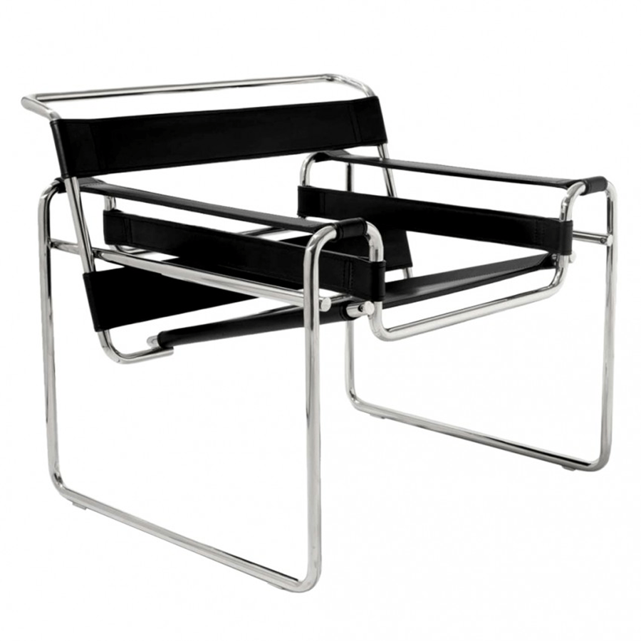

Descripción
La silla Wassily, también conocida como Modelo B3, fue la primera silla tubular del mercado, produciéndose y comercializándose inicialmente entre 1926 y 1929 por la firma austríaca Thonet hasta la II Guerra Mundial. Marcel Breuer diseñó esta silla mientras era director del taller de carpintería en la Bauhaus, en Dessau, Alemania.
A pesar de lo que se cree, la silla no fue diseñada para el pintor Wassily Kandinsky, que era profesor en la Bauhaus al mismo tiempo que Breuer.
Materiales
- Tubos de acero tubular curvados.
- Bandas de cuero.
Contexto
Breuer solía ir a su trabajo en bicicleta lo que le permitió observar su manillar fabricado con acero tubular, un material ligero y resistente. Pensó que este material también podría utilizarse para la fabricación de mobiliario lo que le condujo a los primeros bocetos de la silla B3.